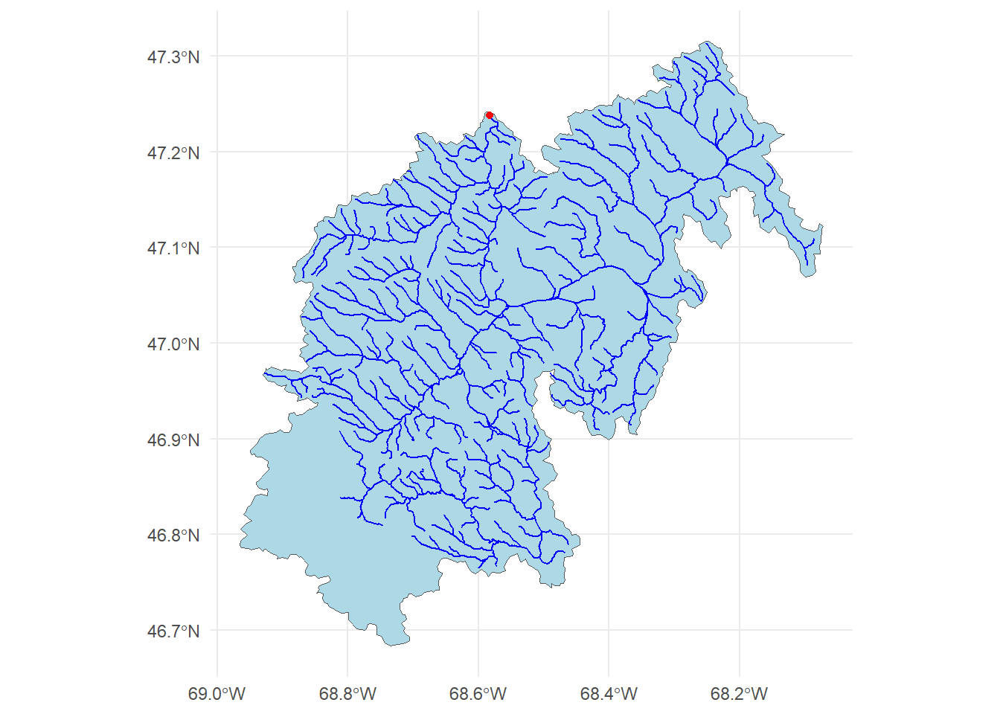
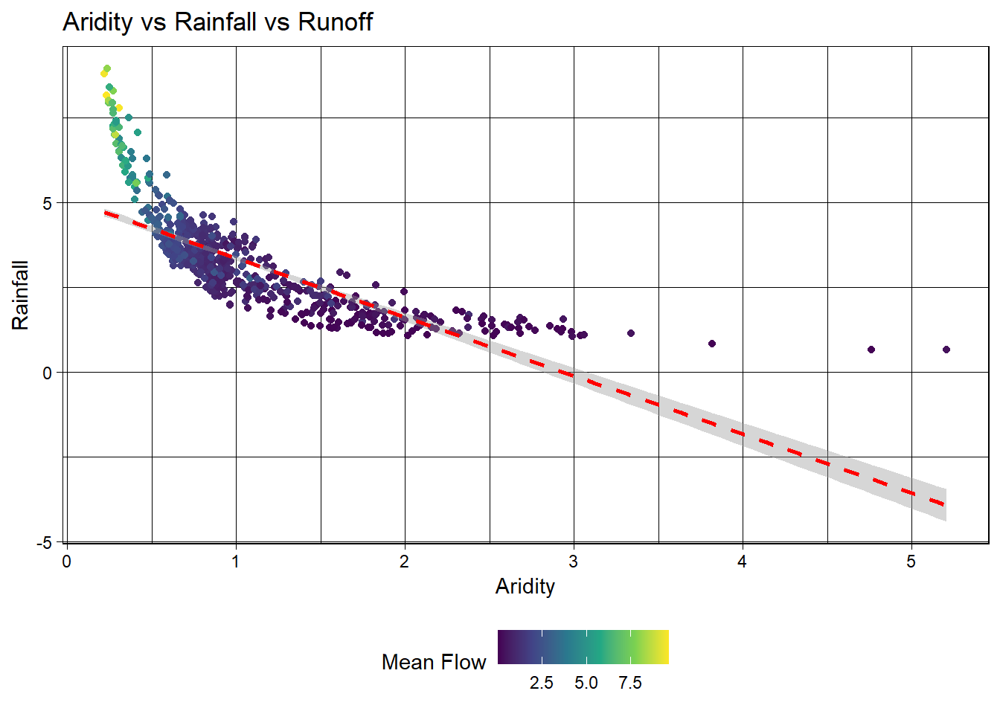
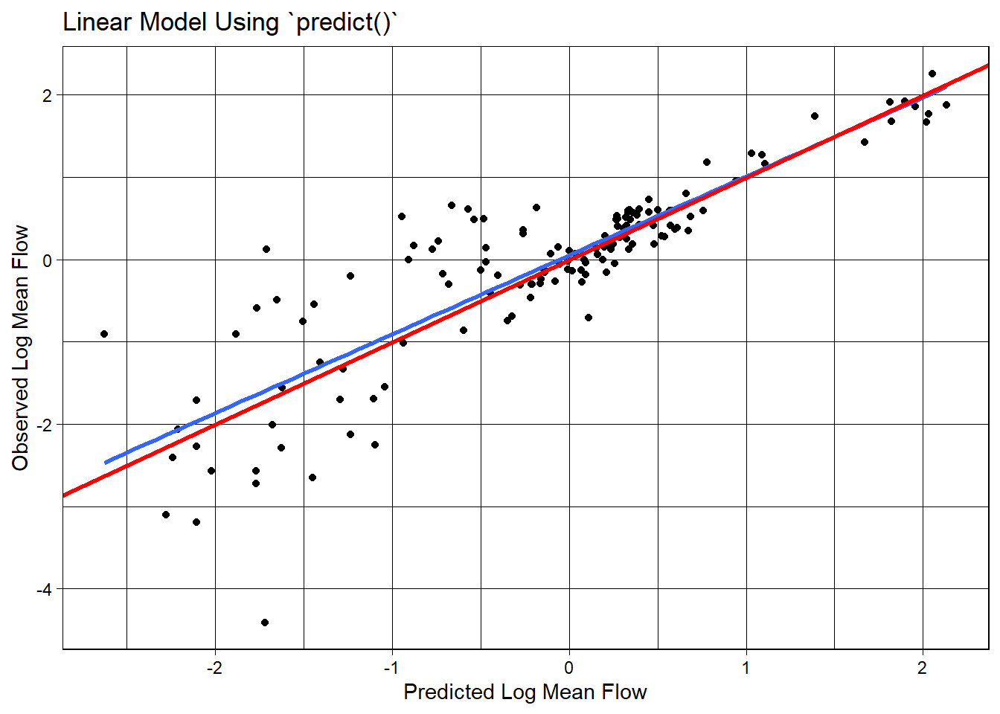
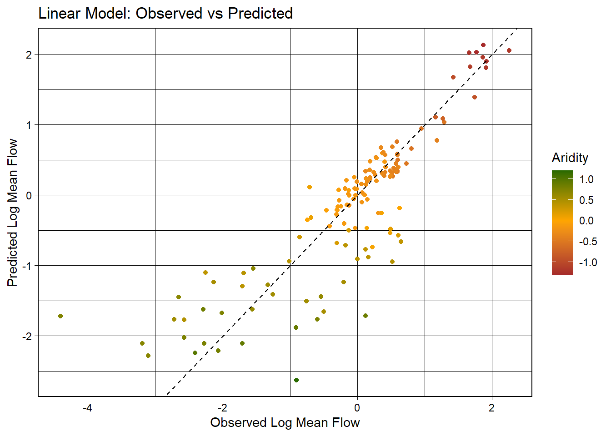
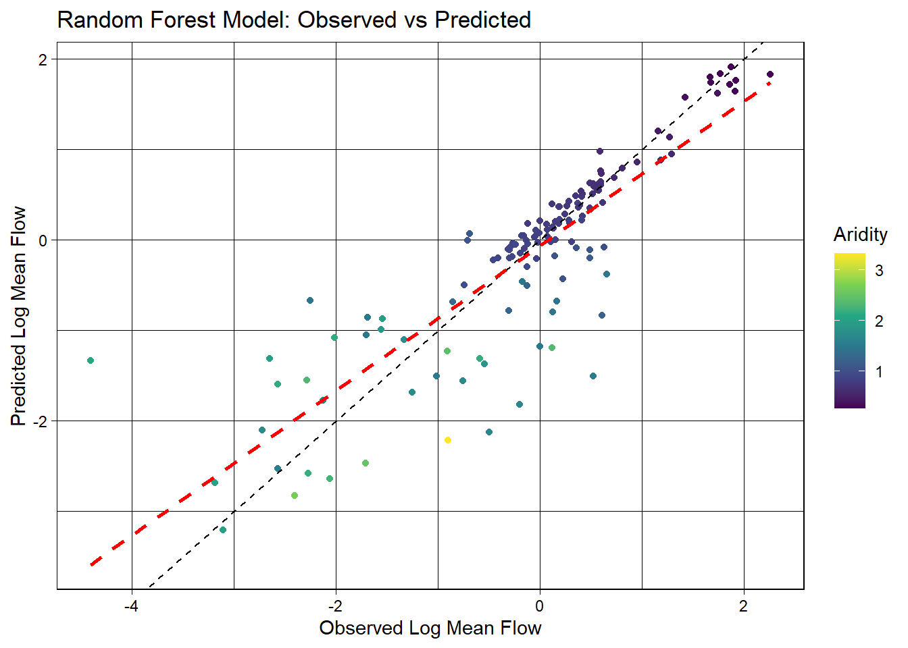
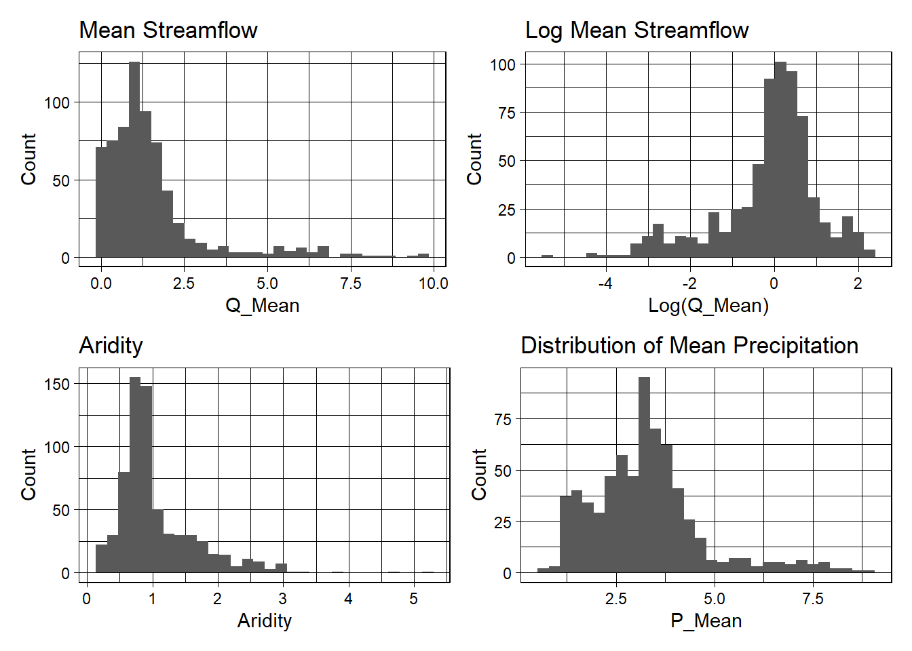
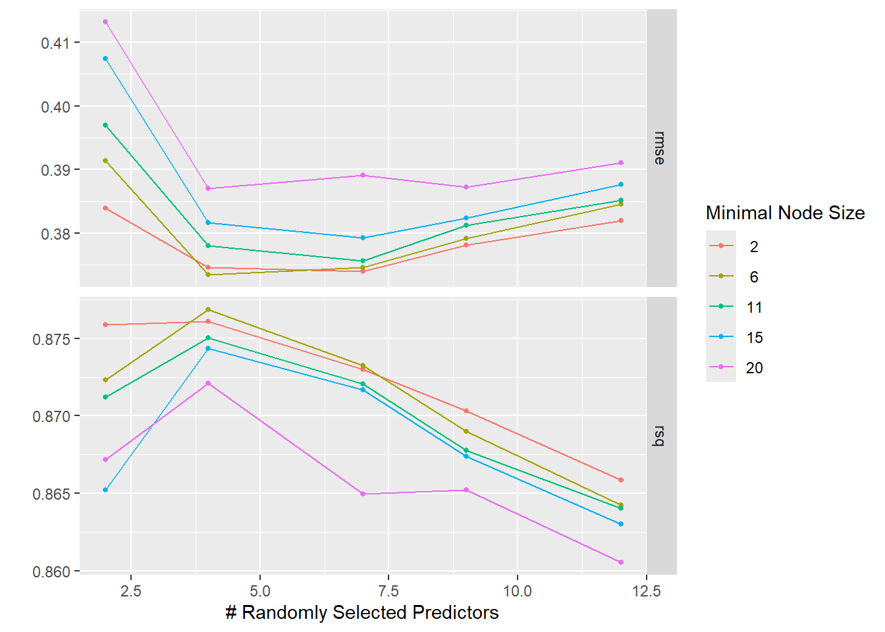
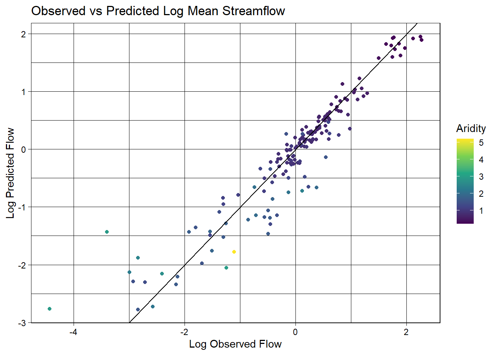

In this lab, we will explore predictive modeling in hydrology using the tidymodels framework and the CAMELS (Catchment Attributes and Meteorology for Large-sample Studies) dataset.
What is tidymodels?
tidymodels is an R framework designed for machine learning and statistical modeling. Built on the principles of the tidyverse, tidymodels provides a consistent and modular approach to tasks like data preprocessing, model training, evaluation, and validation. By leveraging the strengths of packages such as recipes, parsnip, and yardstick, tidymodels streamlines the modeling workflow, making it easier to experiment with different models while maintaining reproducibility and interpretability.
What is the CAMELS dataset?
The CAMELS dataset is a widely used resource in hydrology and environmental science, providing data on over 500 self-draining river basins across the United States. It includes meteorological forcings, streamflow observations, and catchment attributes such as land cover, topography, and soil properties. This dataset is particularly valuable for large-sample hydrology studies, enabling researchers to develop and test models across diverse climatic and physiographic conditions.
In this lab, we will focus on predicting mean streamflow for these basins using their associated characteristics. CAMELS has been instrumental in various hydrologic and machine learning applications, including:
Calibrating Hydrologic Models – Used for parameter tuning in models like SAC-SMA, VIC, and HBV, improving regional and large-sample studies.
Training Machine Learning Models – Supports deep learning (e.g., LSTMs) and regression-based streamflow predictions, often outperforming traditional methods.
Understanding Model Behavior – Assists in assessing model generalization, uncertainty analysis, and the role of catchment attributes.
Benchmarking & Regionalization – Facilitates large-scale model comparisons and parameter transfer to ungauged basins.
Hybrid Modeling – Enhances physics-based models with machine learning for bias correction and improved hydrologic simulations.
A notable study by Kratzert et al. (2019) demonstrated that LSTMs can outperform conceptual models in streamflow prediction. As part of this lab, we will explore how to programmatically download and load the data into R.
What’s in the data?
Each record in the CAMELS dataset represents a unique river basin, identified by an outlet USGS NWIS gauge_id. The dataset contains a mix of continuous and categorical variables, including meteorological, catchment, and streamflow summaries.
The data we are going to download are the basin-level summaries. For example, if we looked at row 1 of the data (Gage: 01013500), all of the attribute values are areal averages over the drainage basin shown below, while the flow metrics are associated with the outlet gage (in red). We can use dataRetrieval::findNLDI() to fetch the basin polygon and upstream flowlines:
# Use the `findNLDI` function to get the basin and flowlines for the first gaugebasin <- dataRetrieval::findNLDI(nwis ="01013500", # Navigate the "upper tributaries" of the basinnav ="UT", # Return the basin and flowlinesfind =c("basin", "flowlines"))# Plot the basin, flowlines, and gauge ...ggplot() +geom_sf(data = basin$basin, fill ="lightblue") +geom_sf(data = basin$UT_flowlines, color ="blue") +geom_sf(data = basin$origin, color ="red") +theme_minimal()

Lab Goals
This lab’s worked example grounds the minimum tidymodels pipeline — split, recipe, workflow, fit, evaluate. Q3 and Q4 then ask you to extend that foundation with everything taught in the lectures.
By the end of the lab you will have:
Programmatically downloaded CAMELS data and joined basin-level attribute files into a modeling-ready frame.
Specified a recipe, dropped it into a workflow, and compared multiple models via workflow_set against cross-validated resamples (Week 5-1).
Extracted variable importance and interpreted predictor ranks through the geographic-proxy lens (Week 5-2).
Evaluated with spatial cross-validation and reported the honest gap between random and spatial CV (Week 5-2).
Tuned hyperparameters with tune_grid() and a named grid, then finalized with last_fit()(Week 6-1).
Produced a deployed Quarto page communicating the full pipeline.
The worked example below demonstrates (1) and a stripped-down (2). You’ll apply the remaining capabilities — full workflow comparison, spatial CV, VIP, tuning, and last_fit() — in Q4 using the lecture material as reference.
Lab Set Up
Make a new R project where you want this work to take place.
Create a Quarto document called lab-05.qmd in the project folder.
Create a data directory in your project folder.
Instantiate a git archive with usethis::use_git()
Connect it to a Github repository with usethis::use_github()
Let’s start by loading the necessary libraries for this lab (you may need to install some!):
Warning: package 'powerjoin' was built under R version 4.5.3
library(glue)library(vip)
Warning: package 'vip' was built under R version 4.5.3
library(baguette)
Warning: package 'baguette' was built under R version 4.5.3
Data Download
The CAMELS dataset is archived on Zenodo. Scroll down to the file listing — you will see a set of .txt files (climate, geology, soil, topography, vegetation, hydrology summaries per basin), along with a PDF describing every column. Each file has a direct-download link of the form https://zenodo.org/records/15529996/files/<filename>?download=1.
We can download the documentation PDF which provides descriptions for the various columns (many are not self-explanatory). We use download.file to pull it into our data/ directory — binary files like PDFs need mode = "wb" on Windows.
Warning in
download.file("https://zenodo.org/records/15529996/files/camels_attributes_v2.0.pdf?download=1",
: URL
https://zenodo.org/records/15529996/files/camels_attributes_v2.0.pdf?download=1:
cannot open destfile '../data/camels_attributes_v2.0.pdf', reason 'No such file
or directory'
Warning in
download.file("https://zenodo.org/records/15529996/files/camels_attributes_v2.0.pdf?download=1",
: download had nonzero exit status
Getting Basin characteristics
Now we want to download the .txt files that store the actual data documented in the PDF. Doing this file by file (like we did with the PDF) is possible, but lets look at a better/easier way…
Lets create a vector storing the data types/file names we want to download:
The glue package provides an efficient way to interpolate and manipulate strings. It is particularly useful for dynamically constructing text, formatting outputs, and embedding R expressions within strings.
Key Features of glue:
String Interpolation: Embed R expressions inside strings using {}.
Improved Readability: Eliminates the need for cumbersome paste(), paste0() and sprintf() commands.
Multi-line Strings: Easily handle multi-line text formatting.
Safe and Efficient: Optimized for performance and readability.
Basic Usage
To use glue, you need to load the package and then call the glue() function with the desired string template. You can embed R expressions within curly braces {} to interpolate values into the string.
class <-"ESS 330"year <-2024glue("We are taking {class} together in {year}")
We are taking ESS 330 together in 2024
Multiples
You can also use glue to interpolate multiple values at once
classes <-c("ESS 330", "ESS 523c")glue("We are taking {classes} together in {year}")
We are taking ESS 330 together in 2024
We are taking ESS 523c together in 2024
Using glue, we can construct the needed URLs and file names for the data we want to download. Zenodo direct-download links end with ?download=1, so we append that to the remote URL but keep the local filename clean:
# Where the files live online ...remote_files <-glue('{root}/camels_{types}.txt?download=1')# where we want to download the data ...local_files <-glue('data/camels_{types}.txt')
Now we can download the data: walk2 comes from the purrr package and is used to apply a function to multiple arguments in parallel (much like map2 works over paired lists). Here, we are asking walk2 to pass the first element of remote_files and the first element of local_files to the download.file function to download the data, and setting quiet = TRUE to suppress output. The process is then iterated for the second element of each vector, and so on.
Once downloaded, the data can be read it into R using readr::read_delim(), again instead of applying this to each file individually, we can use map to apply the function to each element of the local_files list.
# Read and merge datacamels <-map(local_files, readr::read_delim, show_col_types =FALSE)
This gives us a list of data.frames, one for each file that we want to merge into a single table. So far in class we have focused on *_join functions to merge data based on a primary and foreign key relationship.
In this current list, we have >2 tables, but, have a shared column called gauge_id that we can use to merge the data. However, since we have more then a left and right hand table, we need a more robust tool. We will use the powerjoin package to merge the data into a single data frame. powerjoin is a flexible package for joining lists of data.frames. It provides a wide range of join types, including inner, left, right, full, semi, anti, and cross joins making it a versatile tool for data manipulation and analysis, and one that should feel familiar to users of dplyr.
In this case, we are join to merge every data.frame in the list (n = 6) by the shared gauge_id column. Since we want to keep all data, we want a full join.
camels <-power_full_join(camels ,by ='gauge_id')
Note
Alternatively, we could have read straight form the urls. Strongly consider the implications of this approach as the longevity and persistence of the data is not guaranteed.
[] Make sure all data and the PDF are downloaded into you data directory
[] From the documentation PDF, report what zero_q_freq represents
The field zero_q_freq represents the “frequency of days with q = 0mm/day” represented by a perccent (%) (camels_attribute_v2.0.pdf)
Exploratory Data Analysis
First, lets make a map of the sites. Use the borders() ggplot function to add state boundaries to the map and initially color the points by the mean flow (q_mean) at each site.
We can take a moment here to learn a few new things about ggplot2!
NoteColor scales
In ggplot, sometimes you want different things (like bars, dots, or lines) to have different colors. But how does R know which colors to use? That’s where color scales come in!
scales can be used to map data values to colors (scale_color_*) or fill aesthetics (scale_fill_*). There are two main types of color scales:
Discrete color scales – for things that are categories, like “apples,” “bananas,” and “cherries.” Each gets its own separate color.
scale_color_manual(values =c("red", "yellow", "pink")) #lets you pick your own colors.
<ggproto object: Class ScaleDiscrete, Scale, gg>
aesthetics: colour
axis_order: function
break_info: function
break_positions: function
breaks: waiver
call: call
clone: function
dimension: function
drop: TRUE
expand: waiver
fallback_palette: function
get_breaks: function
get_breaks_minor: function
get_labels: function
get_limits: function
get_transformation: function
guide: legend
is_discrete: function
is_empty: function
labels: waiver
limits: NULL
make_sec_title: function
make_title: function
map: function
map_df: function
minor_breaks: waiver
n.breaks.cache: NULL
na.translate: TRUE
na.value: grey50
name: waiver
palette: function
palette.cache: NULL
position: left
range: environment
rescale: function
reset: function
train: function
train_df: function
transform: function
transform_df: function
super: <ggproto object: Class ScaleDiscrete, Scale, gg>
Or
scale_color_brewer(palette ="Set1") #uses a built-in color set.
<ggproto object: Class ScaleDiscrete, Scale, gg>
aesthetics: colour
axis_order: function
break_info: function
break_positions: function
breaks: waiver
call: call
clone: function
dimension: function
drop: TRUE
expand: waiver
fallback_palette: function
get_breaks: function
get_breaks_minor: function
get_labels: function
get_limits: function
get_transformation: function
guide: legend
is_discrete: function
is_empty: function
labels: waiver
limits: NULL
make_sec_title: function
make_title: function
map: function
map_df: function
minor_breaks: waiver
n.breaks.cache: NULL
na.translate: TRUE
na.value: NA
name: waiver
palette: function
palette.cache: NULL
position: left
range: environment
rescale: function
reset: function
train: function
train_df: function
transform: function
transform_df: function
super: <ggproto object: Class ScaleDiscrete, Scale, gg>
Continuous color scales – for numbers, like temperature (cold to hot) or height (short to tall). The color changes smoothly.
scale_color_gradient(low ="blue", high ="red") #makes small numbers blue and big numbers red.
<ScaleContinuous>
Range:
Limits: 0 -- 1
Question 2: Your Turn (20 points)
Model Preparation
As an initial analysis, lets look at the relationship between aridity, rainfall and mean flow. First, lets make sure there is not significant correlation between these variables. Here, we make sure to drop NAs and only view the 3 columns of interest.
As expected, there is a strong correlation between rainfall and mean flow, and an inverse correlation between aridity and rainfall. While both are high, we are going to see if we can build a model to predict mean flow using aridity and rainfall.
Visual EDA
Lets start by looking that the 3 dimensions (variables) of this data. We’ll start with a XY plot of aridity and rainfall. We are going to use the scale_color_viridis_c() function to color the points by the q_mean column. This scale functions maps the color of the points to the values in the q_mean column along the viridis continuous (c) palette. Because a scale_color_* function is applied, it maps to the known color aesthetic in the plot.
# Create a scatter plot of aridity vs rainfallggplot(camels, aes(x = aridity, y = p_mean)) +# Add points colored by mean flowgeom_point(aes(color = q_mean)) +# Add a linear regression linegeom_smooth(method ="lm", color ="red", linetype =2) +# Apply the viridis color scalescale_color_viridis_c() +# Add a title, axis labels, and theme (w/ legend on the bottom)theme_linedraw() +theme(legend.position ="bottom") +labs(title ="Aridity vs Rainfall vs Runoff",x ="Aridity",y ="Rainfall",color ="Mean Flow")
`geom_smooth()` using formula = 'y ~ x'

Ok! so it looks like there is a relationship between rainfall, aridity, and rainfall but it looks like an exponential decay function and is certainly not linear.
To test a transformation, we can log transform the x and y axes using the scale_x_log10() and scale_y_log10() functions:
ggplot(camels, aes(x = aridity, y = p_mean)) +geom_point(aes(color = q_mean)) +geom_smooth(method ="lm") +scale_color_viridis_c() +# Apply log transformations to the x and y axesscale_x_log10() +scale_y_log10() +theme_linedraw() +theme(legend.position ="bottom") +labs(title ="Aridity vs Rainfall vs Runoff",x ="Aridity",y ="Rainfall",color ="Mean Flow")
`geom_smooth()` using formula = 'y ~ x'
Great! We can see a log-log relationship between aridity and rainfall provides a more linear relationship. This is a common relationship in hydrology and is often used to estimate rainfall in ungauged basins. However, once the data is transformed, the lack of spread in the streamflow data is quite evident with high mean flow values being compressed to the low end of aridity/high end of rainfall.
To address this, we can visualize how a log transform may benefit the q_mean data as well. Since the data is represented by color, rather than an axis, we can use the trans (transform) argument in the scale_color_viridis_c() function to log transform the color scale.
ggplot(camels, aes(x = aridity, y = p_mean)) +geom_point(aes(color = q_mean)) +geom_smooth(method ="lm") +# Apply a log transformation to the color scalescale_color_viridis_c(trans ="log") +scale_x_log10() +scale_y_log10() +theme_linedraw() +theme(legend.position ="bottom",# Expand the legend width ...legend.key.width =unit(2.5, "cm"),legend.key.height =unit(.5, "cm")) +labs(title ="Aridity vs Rainfall vs Runoff",x ="Aridity",y ="Rainfall",color ="Mean Flow")
`geom_smooth()` using formula = 'y ~ x'
Excellent! Treating these three right skewed variables as log transformed, we can see a more evenly spread relationship between aridity, rainfall, and mean flow. This is a good sign for building a model to predict mean flow using aridity and rainfall.
Model Building
Lets start by splitting the data
First, we set a seed for reproducibility, then transform the q_mean column to a log scale. Remember it is error prone to apply transformations to the outcome variable within a recipe. So, we’ll do it a priori.
Once set, we can split the data into a training and testing set. We are going to use 80% of the data for training and 20% for testing. We are leaving stratification off in this minimal example, but as Week 5-1 covered, stratified splits often matter when the outcome has structure — you’ll revisit this choice in Q4.
Additionally, we are going to create a 10-fold cross validation dataset to help us evaluate multi-model setups.
set.seed(123)# Bad form to perform simple transformations on the outcome variable within a # recipe. So, we'll do it here.camels <- camels |>mutate(logQmean =log(q_mean))# Generate the splitcamels_split <-initial_split(camels, prop =0.8)camels_train <-training(camels_split)camels_test <-testing(camels_split)camels_cv <-vfold_cv(camels_train, v =10)
Preprocessor: recipe
In Week 5-1 we saw how a recipe lets us declare a preprocessing pipeline once, estimate its parameters on the training data, and reuse it everywhere — folds, test set, new predictions.
We learned quite a lot about the data in the visual EDA. We know that the q_mean, aridity, and p_mean columns are right skewed and can be helped by log transformations. We also know that the relationship between aridity and p_mean is non-linear and can be helped by adding an interaction term. Let’s build a small recipe that encodes those decisions (your Q4 recipe will be bigger):
# Create a recipe to preprocess the datarec <-recipe(logQmean ~ aridity + p_mean, data = camels_train) %>%# Log transform the predictor variables (aridity and p_mean)step_log(all_predictors()) %>%# Add an interaction term between aridity and p_meanstep_interact(terms =~ aridity:p_mean) |># Drop any rows with missing values in the predstep_naomit(all_predictors(), all_outcomes())
Naive base lm approach:
Ok, to start, lets do what we are comfortable with … fitting a linear model to the data. First, we use prep and bake on the training data to apply the recipe. Then, we fit a linear model to the data.
# Prepare the databaked_data <-prep(rec, camels_train) |>bake(new_data =NULL)# Interaction with lm# Base lm sets interaction terms with the * symbollm_base <-lm(logQmean ~ aridity * p_mean, data = baked_data)summary(lm_base)
Call:
lm(formula = logQmean ~ aridity * p_mean, data = baked_data)
Residuals:
Min 1Q Median 3Q Max
-2.91162 -0.21601 -0.00716 0.21230 2.85706
Coefficients:
Estimate Std. Error t value Pr(>|t|)
(Intercept) -1.77586 0.16365 -10.852 < 2e-16 ***
aridity -0.88397 0.16145 -5.475 6.75e-08 ***
p_mean 1.48438 0.15511 9.570 < 2e-16 ***
aridity:p_mean 0.10484 0.07198 1.457 0.146
---
Signif. codes: 0 '***' 0.001 '**' 0.01 '*' 0.05 '.' 0.1 ' ' 1
Residual standard error: 0.5696 on 531 degrees of freedom
Multiple R-squared: 0.7697, Adjusted R-squared: 0.7684
F-statistic: 591.6 on 3 and 531 DF, p-value: < 2.2e-16
# Sanity Interaction term from recipe ... these should be equal!!summary(lm(logQmean ~ aridity + p_mean + aridity_x_p_mean, data = baked_data))
Call:
lm(formula = logQmean ~ aridity + p_mean + aridity_x_p_mean,
data = baked_data)
Residuals:
Min 1Q Median 3Q Max
-2.91162 -0.21601 -0.00716 0.21230 2.85706
Coefficients:
Estimate Std. Error t value Pr(>|t|)
(Intercept) -1.77586 0.16365 -10.852 < 2e-16 ***
aridity -0.88397 0.16145 -5.475 6.75e-08 ***
p_mean 1.48438 0.15511 9.570 < 2e-16 ***
aridity_x_p_mean 0.10484 0.07198 1.457 0.146
---
Signif. codes: 0 '***' 0.001 '**' 0.01 '*' 0.05 '.' 0.1 ' ' 1
Residual standard error: 0.5696 on 531 degrees of freedom
Multiple R-squared: 0.7697, Adjusted R-squared: 0.7684
F-statistic: 591.6 on 3 and 531 DF, p-value: < 2.2e-16
Where things get a little messy…
Ok so now we have our trained model lm_base and want to validate it on the test data.
Remember a models ability to predict on new data is the most important part of the modeling process. It really doesnt matter how well it does on data it has already seen!
We have to be careful about how we do this with the base R approach:
Wrong version 1: augment
The broom package provides a convenient way to extract model predictions and residuals. We can use the augment function to add predicted values to the test data. However, if we use augment directly on the test data, we will get incorrect results because the preprocessing steps defined in the recipe object have not been applied to the test data.
The predict function can be used to make predictions on new data. However, if we use predict directly on the test data, we will get incorrect results because the preprocessing steps defined in the recipe object have not been applied to the test data.
Rec_Bake$p2 <-predict(lm_base, newdata = Rec_Bake)ggplot(Rec_Bake, aes(x = p2, y = logQmean)) +geom_point() +# Linear fit line, no error bandsgeom_smooth(method ="lm", se =FALSE, linewidth =1) +# 1:1 linegeom_abline(color ="red", linewidth =1) +labs(title ="Linear Model Using `predict()`",x ="Predicted Log Mean Flow",y ="Observed Log Mean Flow") +theme_linedraw()
`geom_smooth()` using formula = 'y ~ x'

Correct version: prep -> bake -> predict
To correctly evaluate the model on the test data, we need to apply the same preprocessing steps to the test data that we applied to the training data. We can do this using the prep and bake functions with the recipe object. This ensures the test data is transformed in the same way as the training data before making predictions.
Now that we have the predicted values, we can evaluate the model using the metrics function from the yardstick package. This function calculates common regression metrics such as RMSE, R-squared, and MAE between the observed and predicted values.
metrics(test_data, truth = logQmean, estimate = lm_pred)
# A tibble: 3 × 3
.metric .estimator .estimate
<chr> <chr> <dbl>
1 rmse standard 0.583
2 rsq standard 0.742
3 mae standard 0.390
ggplot(test_data, aes(x = logQmean, y = lm_pred, colour = aridity)) +# Apply a gradient color scalescale_color_gradient2(low ="brown", mid ="orange", high ="darkgreen") +geom_point() +geom_abline(linetype =2) +theme_linedraw() +labs(title ="Linear Model: Observed vs Predicted",x ="Observed Log Mean Flow",y ="Predicted Log Mean Flow",color ="Aridity")

Ok so that was a bit burdensome, is really error prone (fragile), and is worthless if we wanted to test a different algorithm… lets look at a better approach!
Using a workflow instead
tidymodels provides a framework for building and evaluating models using a consistent and modular workflow. The workflows package lets you bundle a preprocessor (recipe or formula) and a model spec into a single object, then fit them together. This makes it easier to experiment with different models, compare performance, and ensure reproducibility.
Here, we use linear_reg() to define a linear regression model, set the engine to lm, and the mode to regression. We then add our recipe to the workflow, fit the model to the training data, and extract the coefficients.
# Define modellm_model <-linear_reg() %>%# define the engineset_engine("lm") %>%# define the modeset_mode("regression")# Instantiate a workflow ...lm_wf <-workflow() %>%# Add the recipeadd_recipe(rec) %>%# Add the modeladd_model(lm_model) %>%# Fit the model to the training datafit(data = camels_train) # Extract the model coefficients from the workflowsummary(extract_fit_engine(lm_wf))$coefficients
As with EDA, graphical and statistical evaluation of the model is key. Here, we use the metrics function to extract the default regression metrics (rmse, rsq, mae) between the observed and predicted mean streamflow values.
We then create a scatter plot of the observed vs predicted values, colored by aridity, to visualize the model performance.
metrics(lm_data, truth = logQmean, estimate = .pred)
# A tibble: 3 × 3
.metric .estimator .estimate
<chr> <chr> <dbl>
1 rmse standard 0.583
2 rsq standard 0.742
3 mae standard 0.390
The real power of this approach is that we can easily switch out the models/recipes and see how it performs. Here, we are going to instead use a random forest model to predict mean streamflow. We define a random forest model using the rand_forest function, set the engine to ranger, and the mode to regression. We then add the recipe, fit the model, and evaluate the skill.
library(baguette)rf_model <-rand_forest() %>%set_engine("ranger", importance ="impurity") %>%set_mode("regression")rf_wf <-workflow() %>%# Add the recipeadd_recipe(rec) %>%# Add the modeladd_model(rf_model) %>%# Fit the modelfit(data = camels_train)
Predictions
Make predictions on the test data using the augment function and the new_data argument.
Awesome! We just set up a completely new model and were able to utilize all of the things we had done for the linear model. This is the power of the tidymodels framework!
That said, we still have some repetition — and, more importantly, we are eyeballing metrics on a single train/test split rather than comparing the two models head-to-head under a fair, resampled evaluation. workflow_set() lets us do both in a few lines.
A workflowset approach
workflow_set is a powerful tool for comparing multiple models on the same data. It allows you to define a set of workflows, fit them to the same data, and evaluate their performance using a common metric. Here, we are going to create a workflow_set object with the linear regression and random forest models, fit them to the training data, and compare their performance using the autoplot and rank_results functions.
Overall it seems the random forest model is outperforming the linear model. This is not surprising given the non-linear relationship between the predictors and the outcome :)
Final Model
The workflow-set comparison above told us the random forest wins. Let’s fit it once more on the full training set so we have a single model object to interrogate:
final <-workflow() |>add_recipe(rec) |>add_model(rf_model) |>fit(data = camels_train)
Evaluation
A proper evaluation has three parts:
Variable importance — which predictors is the model actually using? Week 5-2 introduced vip::vip() paired with extract_fit_parsnip() to pull the underlying model object out of a fitted workflow.
Test-set metrics — apply the trained model to data it has never seen.
A predicted-vs-observed plot — the visual sanity check; the 1:1 line should run through the cloud.
# Predictions on the test setrf_data <-augment(final, new_data = camels_test)# Regression metrics (rmse, rsq, mae by default)metrics(rf_data, truth = logQmean, estimate = .pred)
# A tibble: 3 × 3
.metric .estimator .estimate
<chr> <chr> <dbl>
1 rmse standard 0.591
2 rsq standard 0.738
3 mae standard 0.366
ggplot(rf_data, aes(x = logQmean, y = .pred, colour = aridity)) +scale_color_viridis_c() +geom_point() +# 1:1 line — perfect predictiongeom_abline(linetype =2) +# Actual regression line for contrastgeom_smooth(method ="lm", col ='red', linetype =2, se =FALSE) +theme_linedraw() +labs(title ="Random Forest Model: Observed vs Predicted",x ="Observed Log Mean Flow",y ="Predicted Log Mean Flow",color ="Aridity")
`geom_smooth()` using formula = 'y ~ x'

That’s the minimum end-to-end loop. Q4 asks you to do the full version: swap in spatial CV, tune the hyperparameters, and close with last_fit() — all patterns the lectures cover in detail.
Question 2 Plot
library(patchwork)
Warning: package 'patchwork' was built under R version 4.5.3
Question 2 plots show aridity and mean precipitation across the United States. Areas of lower precipitation are subject to high aridity whereas locations with high precipitation see lower aridity. This makes sense that there may be a correlation between these two parameters.
Question 3: Your Turn! (40 points)
Extend the workflow_set above (which already contains the linear model and the random forest) by adding two more models from the Week 6-1 zoo:
Out of the four methods, I recommend moving forward with the neural network (bag_mlp) model. This model produced the highest r-squared value and the lowest RMSE, while the other methods performed more similarly to one another. This improvement suggests that the neural network provided a better fit, making it the best choice for this analysis.
Bridge to Q4: what the lectures cover
The worked example above stops at a single random-forest fit with default hyperparameters. Q4 asks you to extend it with the rest of the unit. Before starting, re-skim the relevant lecture sections — you’ll be lifting patterns directly from them:
Q4 task
Lecture reference
EDA with skimr/visdat, normality checks, stratification
Week 5-1 — Exploratory Data Analysis, Data Normality, Stratification
Week 5-2 — Part 3, Applying this to your data, The same idea in regression
Random-vs-spatial CV gap as a leakage diagnostic
Week 5-2 — The moment of truth, What a leaky model looks like, The 2×2 comparison
Hyperparameter tuning, named grids, finalize_workflow(), last_fit()
Week 6-1 — Optimizing Models via Tuning, The final fit!
If a line item in the rubric below doesn’t look familiar, that’s your cue to re-watch the relevant lecture slide — do not try to infer the API from this lab alone.
Question 4: Build your own (200 points)
Borrowing from the workflow presented above, build your own complete ML pipeline to predict mean streamflow using the CAMELS dataset.
This question asks you to apply the full toolkit from Week 5 and Week 6: EDA, recipes, workflow sets, spatial cross-validation (CAMELS is a spatial dataset — random CV will flatter your model), hyperparameter tuning, variable importance, and a clean final fit with last_fit(). Q4 is the bulk of the lab — budget time accordingly.
Tip
Benchmark: a well-built model typically achieves R² > 0.9 under random CV. Under spatial CV, expect a 0.05–0.10 drop — that’s honest generalization, not a failure. Report both. If spatial CV stays within ~0.05 of random CV, you have strong evidence your predictors carry transferable signal.
Through the skimr and visdat analysis, it is apparent that most of the CAMELS dataset consists of numeric variables related to watershed characteristics such as LAI, soil consistency, precipitation, and streamflow. The only character-type variable is gauge_id, which is used to identify each watershed or region of interest. The skimr output also shows that there are no missing values in the selected predictors, meaning the dataset is complete and suitable for this analysis. Lastly, the histograms produced for several variables indicate right-skewed distributions, which justifies the use of log transformations and/or normalization steps within the recipe.
Visualize
Plot1 <-ggplot(Camels_2, aes(x = q_mean)) +geom_histogram(bins =30) +labs(title ="Mean Streamflow", x ="Q_Mean", y ="Count") +theme_linedraw()Plot2 <-ggplot(Camels_2, aes(x = logQmean)) +geom_histogram(bins =30) +labs(title ="Log Mean Streamflow", x ="Log(Q_Mean)", y ="Count") +theme_linedraw()Plot3 <-ggplot(Camels_2, aes(x = aridity)) +geom_histogram(bins =30) +labs(title ="Aridity", x ="Aridity", y ="Count") +theme_linedraw()Plot4 <-ggplot(Camels_2, aes(x = p_mean)) +geom_histogram(bins =30) +labs(title ="Distribution of Mean Precipitation", x ="P_Mean", y ="Count") +theme_linedraw()(Plot1 + Plot2) / (Plot3 + Plot4)

Each plot shows minor skewing, further emphasizing the need for transforming the dataset.
Optional
library(ape)
Warning: package 'ape' was built under R version 4.5.3
Attaching package: 'ape'
The following object is masked from 'package:rsample':
complement
The following object is masked from 'package:dials':
degree
The following object is masked from 'package:dplyr':
where
The predictors chosen for this analysis represent watershed storage and hydrologic characteristics related to climate, vegetation, soils, topography, and geology. These variables include aridity, precipitation (rain and snow), PET, elevation, slope, basin area, LAI, soil depth, soil porosity, soil conductivity, and geologic permeability. Based on the EDA, several predictors showed right-skewed distributions, justifying the use of log transformations and normalization within the recipe. Although the selected variables did not contain missing values, preprocessing steps were still necessary to ensure the workflow remained usable for modeling. Interactive parameters were also included because predictors such as aridity and precipitation, will not influence streamflow separately. Together, these predictors will improve the model’s ability to capture the complex hydrologic relationships across the CAMELS basins.
The random forest model was selected because it can capture complex nonlinear interactions within hydrologic data without definition. The XGBoost model was chosen because this method improves predictive accuracy through error correction, while also handling nonlinear relationships. Lastly, the linear model was included as a simpler approach to compare how well linear relationships explain streamflow relative to the other methods.
Workflow set — compare with honest CV (35) — Week 5-2
With your preprocessing steps and models defined, build a workflow_set and compare the models across resamples. Because CAMELS basins are spatially distributed, a random vfold_cv can over-state performance if your model leans on geographic proximity — the Week 5-2 deck walks through this carefully, including when the gap is real and when it isn’t.
10-Fold and Spatial Block
library(spatialsample)
Warning: package 'spatialsample' was built under R version 4.5.3
library(sf)
Warning: package 'sf' was built under R version 4.5.3
Linking to GEOS 3.14.1, GDAL 3.12.1, PROJ 9.7.1; sf_use_s2() is TRUE
→ B | warning: Column `geol_permeability` returned NaN, because variance cannot be calculated
and scaling cannot be used. Consider avoiding `Inf` or `-Inf` values and/or
setting `na_rm = TRUE` before normalizing.
There were issues with some computations A: x1 B: x1
There were issues with some computations A: x3 B: x2
There were issues with some computations A: x13 B: x9
There were issues with some computations A: x25 B: x17
There were issues with some computations A: x30 B: x20
→ A | warning: NaNs produced
→ B | warning: Column `geol_permeability` returned NaN, because variance cannot be calculated
and scaling cannot be used. Consider avoiding `Inf` or `-Inf` values and/or
setting `na_rm = TRUE` before normalizing.
There were issues with some computations A: x1 B: x1
There were issues with some computations A: x10 B: x7
There were issues with some computations A: x19 B: x13
There were issues with some computations A: x28 B: x19
There were issues with some computations A: x30 B: x20
→ A | warning: NaNs produced
→ B | warning: Column `geol_permeability` returned NaN, because variance cannot be calculated
and scaling cannot be used. Consider avoiding `Inf` or `-Inf` values and/or
setting `na_rm = TRUE` before normalizing.
There were issues with some computations A: x1 B: x1
There were issues with some computations A: x13 B: x9
There were issues with some computations A: x22 B: x15
There were issues with some computations A: x30 B: x20
→ B | warning: Column `geol_permeability` returned NaN, because variance cannot be calculated
and scaling cannot be used. Consider avoiding `Inf` or `-Inf` values and/or
setting `na_rm = TRUE` before normalizing.
There were issues with some computations A: x1 B: x1
There were issues with some computations A: x4 B: x3
There were issues with some computations A: x13 B: x9
There were issues with some computations A: x19 B: x13
There were issues with some computations A: x25 B: x17
There were issues with some computations A: x30 B: x20
→ A | warning: NaNs produced
→ B | warning: Column `geol_permeability` returned NaN, because variance cannot be calculated
and scaling cannot be used. Consider avoiding `Inf` or `-Inf` values and/or
setting `na_rm = TRUE` before normalizing.
There were issues with some computations A: x1 B: x1
There were issues with some computations A: x10 B: x7
There were issues with some computations A: x19 B: x13
There were issues with some computations A: x28 B: x19
There were issues with some computations A: x30 B: x20
→ A | warning: NaNs produced
→ B | warning: Column `geol_permeability` returned NaN, because variance cannot be calculated
and scaling cannot be used. Consider avoiding `Inf` or `-Inf` values and/or
setting `na_rm = TRUE` before normalizing.
There were issues with some computations A: x4 B: x3
There were issues with some computations A: x13 B: x9
There were issues with some computations A: x22 B: x15
There were issues with some computations A: x30 B: x20
The random cross-validation results revealed that the random forest model (rand_forest) again produced the highest r-squared and lowest RMSE compared to the other three methods. Although the XGBoost (boost_tree) model produced values close to the random forest results, the linear model (linear_reg) generated values that differed substantially from the other two methods. This makes sense because the linear model is less effective at capturing the nonlinear relationships commonly found in hydrologic data. Comparing these results to the spatial cross-validation results, the values for all models shifted and became closer together. This indicates that spatial influences were present that were not fully captured in the random approach, meaning certain watersheds may be more difficult to predict than others. Even with these shifts, the random forest model remained the best-performing method and would still be my recommendation for this type of dataset. Overall, using either the random or spatial cross-validation approach improves the reliability of identifying hydrologic signals within the environment.
→ B | warning: Column `geol_permeability` returned NaN, because variance cannot be calculated
and scaling cannot be used. Consider avoiding `Inf` or `-Inf` values and/or
setting `na_rm = TRUE` before normalizing.
There were issues with some computations A: x1 B: x1
There were issues with some computations A: x15 B: x5
There were issues with some computations A: x45 B: x9
There were issues with some computations A: x120 B: x15
There were issues with some computations A: x231 B: x21
There were issues with some computations A: x354 B: x28
There were issues with some computations A: x372 B: x32
There were issues with some computations A: x417 B: x37
There were issues with some computations A: x504 B: x43
There were issues with some computations A: x676 B: x51
There were issues with some computations A: x712 B: x56
There were issues with some computations A: x738 B: x60
There were issues with some computations A: x807 B: x66
There were issues with some computations A: x912 B: x72
There were issues with some computations A: x1054 B: x79
There were issues with some computations A: x1068 B: x83
There were issues with some computations A: x1108 B: x88
There were issues with some computations A: x1189 B: x94
There were issues with some computations A: x1353 B: x102
There were issues with some computations A: x1410 B: x107
There were issues with some computations A: x1425 B: x110
There were issues with some computations A: x1470 B: x115
There were issues with some computations A: x1557 B: x121
There were issues with some computations A: x1729 B: x129
There were issues with some computations A: x1765 B: x134
There were issues with some computations A: x1783 B: x137
There were issues with some computations A: x1846 B: x143
There were issues with some computations A: x1945 B: x149
There were issues with some computations A: x2106 B: x156
There were issues with some computations A: x2116 B: x160
There were issues with some computations A: x2151 B: x165
There were issues with some computations A: x2211 B: x170
There were issues with some computations A: x2316 B: x176
There were issues with some computations A: x2458 B: x183
There were issues with some computations A: x2472 B: x187
There were issues with some computations A: x2512 B: x192
There were issues with some computations A: x2577 B: x197
There were issues with some computations A: x2710 B: x204
There were issues with some computations A: x2808 B: x208
There were issues with some computations A: x2814 B: x211
There were issues with some computations A: x2823 B: x213
There were issues with some computations A: x2836 B: x215
There were issues with some computations A: x2863 B: x218
There were issues with some computations A: x2899 B: x221
There were issues with some computations A: x2944 B: x224
There were issues with some computations A: x3018 B: x228
There were issues with some computations A: x3108 B: x232
There were issues with some computations A: x3160 B: x235
There were issues with some computations A: x3187 B: x241
There were issues with some computations A: x3295 B: x250
There were issues with some computations A: x3484 B: x259
There were issues with some computations A: x3510 B: x260
Tuned Landscape
autoplot(Tuned_Grid)

show_best(Tuned_Grid, metric ="rsq")
# A tibble: 5 × 8
mtry min_n .metric .estimator mean n std_err .config
<int> <int> <chr> <chr> <dbl> <int> <dbl> <chr>
1 4 6 rsq standard 0.877 10 0.0204 pre0_mod07_post0
2 4 2 rsq standard 0.876 10 0.0209 pre0_mod06_post0
3 2 2 rsq standard 0.876 10 0.0234 pre0_mod01_post0
4 4 11 rsq standard 0.875 10 0.0201 pre0_mod08_post0
5 4 15 rsq standard 0.874 10 0.0200 pre0_mod09_post0
The tuning results showed that the min_n hyperparameter had a noticeable influence on model performance, with smaller to moderate node sizes generally outperforming larger values such as 15–20. The mtry parameter also affected performance, with moderate numbers of randomly selected predictors producing the highest r-squared and lowest RMSE values. Overall, the small changes across the tuning grid suggest that the random forest model is stable and not overly sensitive to minor hyperparameter adjustments.
Variable importance (25) — Week 5-2
Plot
Workflow_Final <-finalize_workflow(Tuned_Workflow, Tuned_Best)Workflow_Fit <-fit(Workflow_Final, data = Camels_Train)
Warning in bake.step_log(x$steps[[i]], new_data = training): NaNs produced
Warning: Column `geol_permeability` returned NaN, because variance cannot be calculated
and scaling cannot be used. Consider avoiding `Inf` or `-Inf` values and/or
setting `na_rm = TRUE` before normalizing.
The variable importance plot shows that the parameters of precipitation, aridity, and evapotranspiration were the most reliable predictors in the random forest model for predicting streamflow. Due to these parameters’ influence on how water enters and moves throughout the watershed, this result is expected. However, the Moran’s I analysis also showed that several of these predictors, including precipitation and aridity, were spatially autocorrelated. This suggests that some of the predictor importance may partially reflect geographic location in addition to true hydrologic processes. Because nearby watersheds often share similar climate and landscape characteristics, these variables can act as geographic proxies. Despite this, the model still showed strong performance under spatial cross-validation, suggesting that the predictors are capturing hydrology without solely relying on location.
Model provided VIP.
Final fit & evaluate (25) — Week 6-1
Use the canonical tidymodels closing move (Week 6-1, The final fit!):
Finalize
Workflow_Final
══ Workflow ════════════════════════════════════════════════════════════════════
Preprocessor: Recipe
Model: rand_forest()
── Preprocessor ────────────────────────────────────────────────────────────────
5 Recipe Steps
• step_impute_median()
• step_log()
• step_interact()
• step_normalize()
• step_zv()
── Model ───────────────────────────────────────────────────────────────────────
Random Forest Model Specification (regression)
Main Arguments:
mtry = 4
trees = 500
min_n = 6
Engine-Specific Arguments:
importance = impurity
Computational engine: ranger
→ B | warning: Column `geol_permeability` returned NaN, because variance cannot be calculated
and scaling cannot be used. Consider avoiding `Inf` or `-Inf` values and/or
setting `na_rm = TRUE` before normalizing.
There were issues with some computations A: x1 B: x1
There were issues with some computations A: x3 B: x2
Test-Set Performance
collect_metrics(Fit_Final)
# A tibble: 2 × 4
.metric .estimator .estimate .config
<chr> <chr> <dbl> <chr>
1 rmse standard 0.371 pre0_mod0_post0
2 rsq standard 0.889 pre0_mod0_post0
ggplot(Prediction_Final, aes(x = logQmean, y = .pred, color = aridity)) +geom_point() +geom_abline() +scale_color_viridis_c() +theme_linedraw() +labs(title ="Observed vs Predicted Log Mean Streamflow", x ="Log Observed Flow", y ="Log Predicted Flow",color ="Aridity")

The final results reveal that the tuned random forest model predicts log mean streamflow well for the watersheds that were not included in the training dataset. Because the model performed consistently across different locations, this suggests that varying geographic regions did not strongly reduce predictability. Specifically, the model appears to perform best for mid-range streamflow values compared to the lowest and highest observed flows. One notable observation is that many of the watersheds with larger residuals also correspond to lower aridity values, which may warrant additional investigation within this dataset. The models performed well, although some limitations likely remain due to the availability and quality of the input predictors.
Rubric
Total: 300 points (Q4 = 200 pts / 67%)
Submission:
Once you have completed the above steps, you can submit your lab for grading. The lab should be submitted as a URL to your deployed repo page. The repo should contain the lab-05.qmd file with all the code, data, and output.